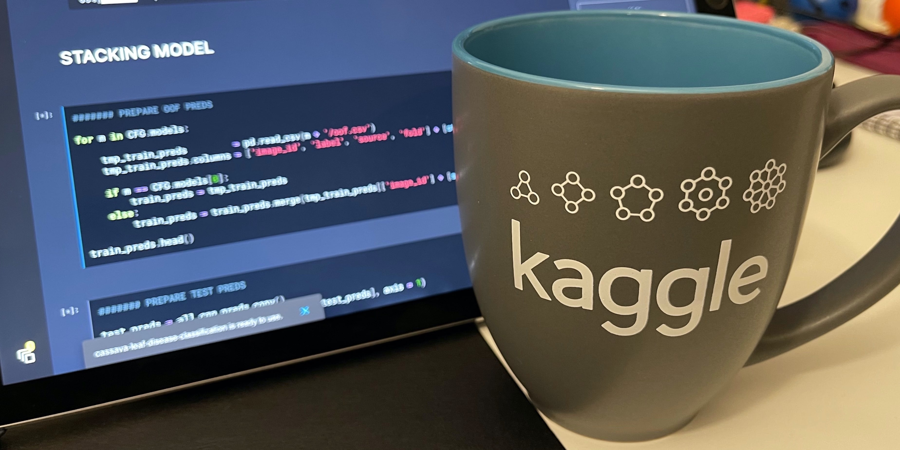

Kaggle
I enjoy taking part at ML competitions on Kaggle. This page summarizes my achievements and provides links to blog posts, writeups and GitHub repos with my solutions. Check out my Kaggle profile to see more.
I enjoy taking part at ML competitions on Kaggle. This page summarizes my achievements and provides links to blog posts, writeups and GitHub repos with my solutions. Check out my Kaggle profile to see more.
Overall rank
I am in the top-1% Kaggle users in Competitions, Notebooks, Datasets and Discussion. My highest user ranks are:
- 🏆 Competitions: 293 (Master)
- 📊 Notebooks: 330 (Expert)
- 📁 Datasets: 75 (Expert)
- 🗣 Discussion: 194 (Expert)
Competitions
My medals are grouped by application areas. Follow the links for summaries, code and documentation.
Computer vision
- 🥇 Cassava Leaf Disease Classification, top-1%. Identified sick plants with deep learning
- 🥇 SIIM-ISIC Melanoma Classification, top-1%. Trained CNNs for skin lesion classification
- 🥈 PetFinder Pawpularity Contest, top-4%. Predicted pet adoption from image and tabular data
- 🥈 RANZCR Catheter and Line Position Challenge, top-5%. Detected catheters on x-rays
- 🥉 Prostate Cancer Grade Assessment Challenge, top-6%. Diagnosed cancer on prostate tissue biopsies
- 🥉 SETI Breakthrough Listen - E.T. Signal Search, top-8%. Detected anomalies in radio signals
- 🥉 APTOS 2019 Blindness Detection, top-9%. Identified retinopathy on retina photos
- 🥉 RSNA STR Pulmonary Embolism Detection, top-13%, Classified embolism in chest CT scans
Natural language processing
- 🥈 BMS Molecular Translation, top-5%. Built CNN-LSTM for image-to-text translation
- 🥉 CommonLit Readability Prize, top-9%. Predicted readability with transformers
Tabular data
- 🥈 Google Analytics Customer Revenue Prediction, top-2%. Predicted customer spendings
- 🥈 IEEE-CIS Fraud Detection, top-3%. Detected fraudulent consumer transactions
- 🥈 Home Credit Default Risk, top-4%. Classified risky applicants with gradient boosting
- 🥉 COVID-19 Vaccine Degradation Prediction, top-6%. Built RNNs for predicting mRNA degradation
- 🥉 Instant Gratification, top-6%. Trained classical ML models for synthetic data classification
- 🥉 Mechanisms of Action Prediction, top-10%. Classified drugs with deep learning algorithms
Time series
- 🥈 PLAsTiCC Astronomical Classification, top-5%. Identified astronomical objects by their signals
- 🥉 Riiid! Answer Correctness Prediction, top-7%. Predicted test answer correctness with gradient boosting
Top-rated notebooks
My Kaggle notebooks that received the most upvotes from the community.
- 🔥 LightGBM on Meta-Features: classified pulmonary embolism with features extracted from X-rays
- 🔥 EfficientNet + Multi-Layer LSTM: translated molecule images to chemical formulas with deep learning
- 🔥 Stack Them All!: stacking ensemble pipeline for leaf disease classification with CNN models